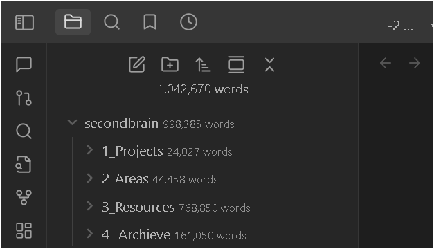

🚀 From WordPress to Obsidian: A Journey of Self vs. Service

🔮 Reason – Why?
The rise of Obsidian and the fall of my WordPress blog wasn’t just a tech pivot—it was a reckoning. Blogging on WordPress was always for others: a public stage where I pushed personal ramblings, half-baked thoughts, and unpolished emotions into the spotlight. I was oversharing, not curating. Spiritually, it felt misaligned—exposing my inner world without refining it. Emotionally, I was drained by the pressure to perform. Mechanically, WordPress bogged me down with updates and clutter, while Obsidian whispered a promise: a space for myself, where I could think, not just broadcast.
🎯 Purpose – How?
My roadmap became clear: use Obsidian to rebuild my mind, then reboot WordPress to serve others better. Here’s the tactic:
-
PRESENT VALUE: Capture raw thoughts for me, not the masses.
-
HIGH TOUCH. HIGH TECH: Blend soulful reflection with smart tools.
-
LEVERAGE STORY: Shape my chaos into lessons worth sharing.
-
TOOLS PROCESSES: Obsidian’s graph view to connect the dots.
-
LATEST ENVIRONMENT: A clean slate to think, not appease.
-
BEST DIET: Nourish my mind, not my ego.
-
RE-BUILD STUDIO: Craft a private creative core.
-
ITERATE ARTICULATE: Refine ideas before they go public.
-
RIDE TECH AI TRENDS: Use AI (like Grok!) to sharpen my edge.
-
CAPTURE RESEARCH OPEN SOURCE: Hoard wisdom, share later.
-
ORGANIZE DEVELOP > LACAN: Structure thoughts with depth.
-
DISTILL VIDEOS: Boil insights down for impact.
-
EXPRESS FOR MEDIUM: Repurpose polished ideas outward.
-
PACK DIVERGE VALUE CONVERGE: Bundle mess into meaning.
-
SELL TO HELP MORE: Package value to uplift others.
-
BORROW TO PASS: Learn widely, give generously.
-
MOVE EVERYWHERE: Stay fluid with Obsidian’s sync.
Obsidian is my backstage—WordPress will be the rebooted front stage, fixed and repackaged for you.
🗺 Map – What?
The steps to make it real:
-
Export & Archive: Pulled WordPress posts into Markdown.
-
Obsidian Setup: Plugins like Dataview turned it into my brain’s HQ.
-
Graph Thinking: Linked notes for me, not the algorithm.
-
Content Shift: Stopped pushing personal drafts live.
-
Fix the Blog: Reboot WordPress with curated, packaged ideas.
-
AI Boost: Leaned on Grok to brainstorm this shift.
-
Visual Polish: Screenshots to show, not just tell.
✨ Web References
-
Obsidian.md – My haven for self.
-
WordPress.org – Still the king for sharing.
-
Markdown Guide – Simple, powerful, mine.
-
Medium – Where packaged ideas will shine.
🔗 Connect with Me
-
💼 LinkedIn: https://www.linkedin.com/in/rifaterdemsahin/
-
🐦 Twitter: https://x.com/rifaterdemsahin
-
🎥 YouTube: https://www.youtube.com/@RifatErdemSahin
-
💻 GitHub: https://github.com/rifaterdemsahin
💡 This document was prepared with the assistance of xAI’s Grok model on April 07, 2025.
Imported from rifaterdemsahin.com · 2025